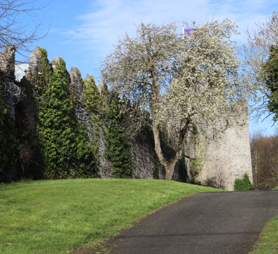

Review
“Great spot to visit when in swords, especially with the walk around the top of the castle walls. Great that's its free and then you can walk in the little park beside it and get a pastry in the bakery on the corner!”
“Great spot to visit when in swords, especially with the walk around the top of the castle walls. Great that's its free and then you can walk in the little park beside it and get a pastry in the bakery on the corner!”
Swords Castle is over 800 years old, despite its name, it is not a Castle but actually, an Archbishop’s Palace and is, in fact, one of the best surviving examples of one in Ireland this led to it being labelled as a National Monument and serves as the towns primary and most recognizable attraction. It is connected to the community park which makes it the perfect place to visit and explore during the spring and summer.
It was built around the year 1200 AD by the Archbishop of Dublin, a man named John Comyn and was meant to be his home and all Archbishops of Dublin after.
The castle had fallen into disrepair. The damage being from the Bruce campaign of 1317, which devastated much of the south from Dundalk to the gates of Dublin which left the castle relatively unusable
In 1324 archbishop Alexander de Bicknor, built a new palace in Tallaght leaving Swords Castle abandoned. Supposedly Alexander was accused of mishandling the treasury and his profits were seized by the king and an inquisition in 1326.
The castle was left unused save for a portion that was occupied by a constable during the 14th to early 16th century. During the 1641 Rebellion, it was used as the rendezvous for the Anglo-Irish Catholic families of The Pale. While they assembled under arms at the castle to join the rebellion but were however attacked by Sir Charles Coote from the Lord's Justices and were chased out.
The Castle would eventually be bought and owned in 1870 by the Cobbe family, an old Irish landed family which has produced several prominent Irish politicians, clergymen, writers, activists and soldiers. The would then lease the grounds to a man named Robert Savage.
(image sourced from wiki)

(image sourced from fingal.ie)
Eventually, in 1985 the County Council bought the castle along with other sites they had with the intention of restoring them. This then has become the town's primary tourism attraction.
This tower was built by Archbishop Richard Talbot or by his successor Michael Tregury after the 1450s. since then it has seldom been used and fallen into disrepair like much of the rest of the castle. However, the Constables Tower was restored between 1996 and 1998. A new roof was added. There are two large chambers, next to which is a garderobe or medieval toilet. A chute would take the waste outside the north wall.
.jpg)

The Chapel is clearly visible as you approach the Castle from Main Street. It is an unusually large chapel even for an archbishop's residence. Since 1995 the chapel has undergone extensive reconstruction. When look up to where the timber beams meet the walls there are a series of carved heads, based on the people working here at the time. New tiles were even made using traditional methods and were based on those found during the 1971 excavations. It also possesses windows which have images depicting the four Evangelists those being Matthew, Mark, Luke and John.
Bridge St, Townparks, Swords, Co. Dublin, K67 X439
Swords Castle is located in the center of town close to the Pavilions shopping center and is free mean you do not have to worry about paying in order to enter.
.jpg)